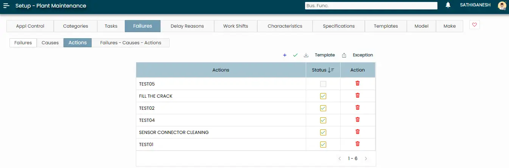

<div data-category="Plant Maintenance" data-title="Actions" data-updated="January 27, 2026" data-contributors="RoadmapIT" data-breadcrumb="Home,Plant Maintenance,Actions">
  <div class="page-content">
    <p>Actions are the steps or measures that are taken to identify, analyze, correct, and prevent the causes and consequences of equipment failures.</p>
    <p>The Action & Description are defined in this screen. The action cannot be modified or deleted when there exist child records, but the descriptions can be modified.</p>
    <h5>Navigation path:</h5>
    <p class="fs-6">Plant Maintenance \ Setup \ Setup-Plant Maintenance \ Failures \ Actions</p>
    
    <ul style="list-style-type: none; align-content: center">
      <li class="mouse-icon">
        By Clicking the
        <i class="bi bi-plus fs-4 mx-2 text-primary"></i>
        Add button we can create new Actions
      </li>
      <li class="mouse-icon">Enter the Action Description</li>
      <li class="mouse-icon">
        Click on
        <i class="bi bi-check-lg fs-4 mx-1 text-success"></i>
        button to save
      </li>
    </ul>
  </div>
</div>